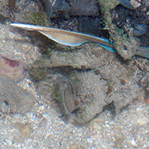
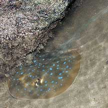

|
|
| fishes text index | photo index |
| Phylum Chordata > Subphylum Vertebrate > fishes > Order Rajiformes > Family Dasyatidae |
| Blue-spotted
fantail ray Taeniura lymma Family Dasyatidae updated Sep 2020 Where seen? This beautiful stingray is sometimes encountered on sandy areas and in coral rubble near living reefs on some of our shores. It is often also seen by divers. Sadly, it is also sometimes encountered trapped in a drift net. It is considered possibly the most abundant ray in coral reefs in our region. Features: Grows to about 30cm in diameter, those seen 15-20cm. Body oval with a rounded snout. Body colour brown, grey, yellow, olive-green to reddish brown; with lots of obvious bright blue spots. |
 Oval body with rounded snout. Many bright blue spots. St. John's Island, Aug 08 |
 Broad skin flap under the tail. Blue stripes along length of tail. |
 Spine near the end of the tail. |
 St. John's Island, Aug 08 |
| Tail long rather thick and broad with
two blue stripes along the length. There is a broad skin fold under
the tail, so it is sometimes called the Blue-spotted ribbontail ray.
It has one or two venomous spines near the middle of the tail. What does it eat? The ray moves into shallow sandy areas with the rising tide to forage for snails and clams, worms, shrimps and crabs. As the tide falls, it shelters in caves and under ledges. It is rarely found buried under sand. It is more active at night. Fantail ray babies: The ray gives birth to live young. |
 Hard to spot under rippling water. Terumbu Raya, May 10 |
 May be half buried in sand. Sisters Island, Jul 07 |
|
Status and threats: Throughout its range, the Blue-spotted fantail ray is under pressure from over collection for the aquarium trade and destruction of its reef habitat. It is considered near threatened.
| Blue-spotted fantail rays on Singapore shores |
On wildsingapore
flickr
|
| Other sightings on Singapore shores |
 Hidden under ledges and rocks. Tanah Merah, Oct 09 Photo shared by James Koh on his blog. |
| blue-spotted fantail ray @ tBembanBesar 22Apr2011 from SgBeachBum on Vimeo. |
Links
|